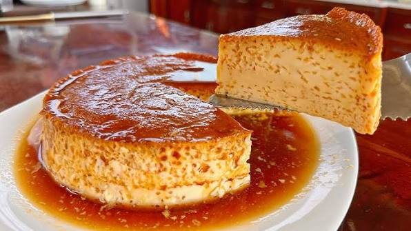

Creme caramel

Description
The Timeless Appeal of Creme Caramel
Flan, universally known as creme caramel, is one of the most elegant yet comforting desserts in the culinary world. This traditional sweet treat is defined by its ultra-smooth, silky custard base made from simple ingredients like eggs, milk, and sugar, which gets baked over a layer of liquid caramel.
The magic happens during cooking and chilling: when the flan is inverted onto a plate, the rich, golden caramel sauce runs down the sides, beautifully coating the delicate custard in a glossy, sweet embrace.
An Absolute Icon of Comfort Food
While popular across Europe and Latin America, this dessert holds a sacred place in family traditions, often serving as the grand finale for Sunday gatherings.
Part of its legendary status comes from its fantastic versatility; while delicious on its own, it achieves perfection when served in true Argentinian style—accompanied by a generous dollop of dulce de leche, a scoop of whipped cream (flan mixto), or both. It is a foolproof crowd-pleaser that delivers pure nostalgia in every single spoonful.
Ingredients
- 1 liter of whole milk
- 8 large eggs
- 200g of sugar (for the custard)
- 150g of sugar (for the caramel)
- 1 tablespoon of vanilla extract
Steps
- Preheat your oven to 160°C (325°F).
- To make the caramel, place 150g of sugar in a saucepan over medium heat, stirring constantly until it melts into a smooth, golden-brown liquid, then carefully pour it into your flan mold, coating the bottom and sides completely.
- In a large bowl, gently whisk the eggs with 200g of sugar and the vanilla extract until combined, taking care not to create too many air bubbles.
- Slowly pour the milk into the egg mixture, stirring continuously until the sugar is fully dissolved.
- Strain the mixture through a fine sieve into the caramel-lined mold to ensure an incredibly smooth texture.
- Place the mold inside a larger baking pan filled with hot water (a water bath or baño María) and bake for about 50-60 minutes until the edges are set but the center still jiggles slightly.
- Remove from the oven, let it cool to room temperature, and then refrigerate for at least 4 hours (ideally overnight) before carefully running a knife around the edge and flipping it onto a serving plate.
Home